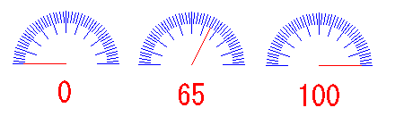

|
|
|
|
|
|
|
|
A meter graph graphically represents the current value of the defined variable as a percentage from 0 to 100%. Meter graphs are available in the Toolchest. You can also create your own meter graph by using Rotate animation.

Property |
Description |
|
Name |
The meter graph object's name. Whenever an object is created, a default name is generated. When renaming an object, its name must be unique within the target, must contain no more than 32 valid characters, and must follow the naming conventions. For details, see Appendix 9, Naming Conventions. |
|
Description |
This property is read-only. It displays the name of the part and in which version of Vijeo-Designer it was created. |
|
Version |
This property is read only and displays the editor version that created the part. |
|
Top |
The coordinates, in pixels, of the top-left corner of the object.
By changing these properties, the graphical object can be moved up, down, left, and right.
|
|
Left |
||
Width |
The width/height of the object in pixels. Enter a value between 60 and 3000. |
|
Height |
||
Variable |
Select the integer variable to display in the meter graph. |
|
Start Point |
This property will display only if you choose a round meter graph. Select the point that the graph starts from Up, Right, Down, Left. |
|
From |
Enter the minimum range of the variable. The From value is represented as 0%. Any variable value that is less than the From value is displayed as 0%. |
|
To |
Enter the maximum range of the variable. The To value is represented as 100%. Any variable value that is more than the To value is displayed as 100%. |
|
EnableScale |
Select whether or not to enable the scale. |
|
ScaleLength |
Select the length of the scale lines on the meter. The length is measured as a percentage of the meter radius. Select Invisible if you do not want to display the scale. |
|
NumOfDivision |
Enter the number of main (bigger) divisions in the graph with a value between 1 and 360. |
|
NumOfSubDivision |
Enter the number of subdivisions (smaller divisions) in the graph with a value between 2 and 10. Select Invisible if you do not want to display the subdivisions. |
|
ScaleColor |
Select the color of the division lines on the scale. |
|
HandColor |
Select the color of the meter hand.
|
|
RestoreDefaults |
Click the |
|
Placeholder |
You can assign a placeholder in any property that requires a variable definition. Click the ellipsis to open the Placeholders dialog box and edit the variable placeholder for the object. The dialog box only displays if you had set up a placeholder for the object. For more information on placeholders, see Section 21.2.4, Working with Variable Placeholders. |
|